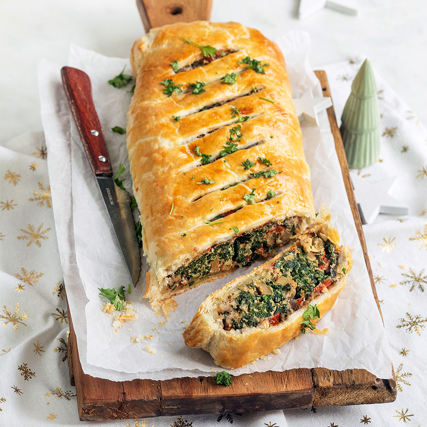

gehakt-brood
Nagerecht
groente-strudel
Ingrediënten
- 1 rode paprika
- 125 gr ricotta
- 400 gr verse spinazie
- 1 handje walnoten
- 1 snuf peper en zout
- 1 rode ui
- 2 tenen knoflook
- 2 eetlepels paneermeel
-
- 2 eieren
- olie om in te bakken
- 1 rol vers bladerdeeg
Bereidingswijze
- Verwarm de oven voor op 200° graden.
- Verhit een grote pan met een beetje olie en fruit de gesnipperde ui en knoflook hierin aan.
- Voeg de spinazie in etappes erbij en laat slinken.
- Snijd de paprika in blokjes en bak ook even mee met de spinazie. Voeg een snuf peper en zout toe.
- Doe het mengsel in een kom en voeg de in stukjes gesneden gedroogde tomaatjes, walnoten en ricotta erbij.
- Voeg ook 1 ei toe en meng alles goed door elkaar.
- Rol het deeg af en leg op een bakplaat met bakpapier (als dit nog niet bij de rol zit).
- Bestrooi het bladerdeeg met paneermeel.
- Schep het spinaziemengsel op het deeg en verdeel over ongeveer ⅓ deel.
- Vouw het deeg aan de zijkanten iets over de vulling en rol hem dan voorzichtig op. Druk de naden goed dicht en zorg dat deze het liefst aan de onderkant zitten.
- Snijd met een scherp mes wat inkepingen aan de bovenkant van de rol.
- Klop het andere ei los en bestrijk de rol hiermee.
- Bak de groentestrudel ca. 35 minuten in de oven tot hij mooi bruin en knapperig is.
- Tips: je kunt deze strudel al een dag van tevoren maken en vervolgens kort opwarmen in oven. Je kunt ook het spinaziemengsel al van tevoren maken en bewaren in de koelkast.
- Lekker met een salade of een soep erbij.
- Serveer 1 plakje van de strudel als voorgerecht of 2 à 3 plakjes als hoofdgerecht.
- Uit deze groentestrudel kun je 8 plakjes snijden.
